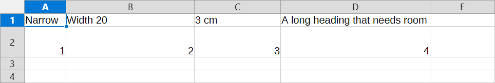

Column width and row height
Column widths are given in characters by default: a width of 10 is about ten digits of the default font, plus a little padding. Give unit = :cm (or :mm, :in, :pt) to use a length, as LibreOffice's Format ▸ Columns ▸ Width dialog does. Row heights are in points.
using OpenDocumentSpreadsheets
xf = newods("Sizes")
sh = xf["Sizes"]
sh["A1:D1"] = ["Narrow" "Width 20" "3 cm" "A long heading that needs room"]
sh["A2:D2"] = [1 2 3 4]
setColumnWidth(sh, "A"; width = 6) # in characters
setColumnWidth(sh, "B"; width = 20)
setColumnWidth(sh, "C"; width = 3, unit = :cm) # a length
setRowHeight(sh, 2; height = 30) # in points
autofitColumns(sh, "D") # LibreOffice's optimal width
OpenDocumentSpreadsheets.getColumnWidth(sh, "B1") # 20.7109375: 20, plus the padding
OpenDocumentSpreadsheets.getColumnWidth(sh, "C1"; unit = :cm) # 3.0
OpenDocumentSpreadsheets.getRowHeight(sh, "A2") # 30.2109375: 30, plus the padding<!– shot: widths cells=5x4 –>

The getters include the padding that LibreOffice adds to a width or height: 0.7109375 characters for a column, and 0.2109375 points for a row. So a width set as 20 reads back as 20.7109375.
autofitColumns does what LibreOffice's Format ▸ Columns ▸ Optimal Width does: it measures each cell's text as LibreOffice shows it, in the cell's font. With no columns given it fits them all.
writetable takes widths and number formats for its columns, also when streaming:
prices = (item = ["Tea", "Cake"], price = [3.5, 4.25]) # or a DataFrame
writetable("prices.ods", prices; column_widths = [12, 30], column_formats = Dict("price" => "#,##0.00"),
overwrite = true)Units
| Setting | Unit |
|---|---|
Column widths: setColumnWidth, autofitColumns, writetable's column_widths | characters; or unit = :cm, :mm, :in, :pt |
Row heights: setRowHeight | points |
Font sizes: setFont | points |
Indents: setAlignment's indent | levels of 0.286 cm |
Page margins: setPageMargins | inches |
Paper sizes: setPageSetup's paperWidth, paperHeight | cm; or unit = :mm, :in, :pt |
Notes: addComment's width, height | pixels |
Pictures: addImage's size | pixels |
Chart lines: setSeriesLine's width | points |